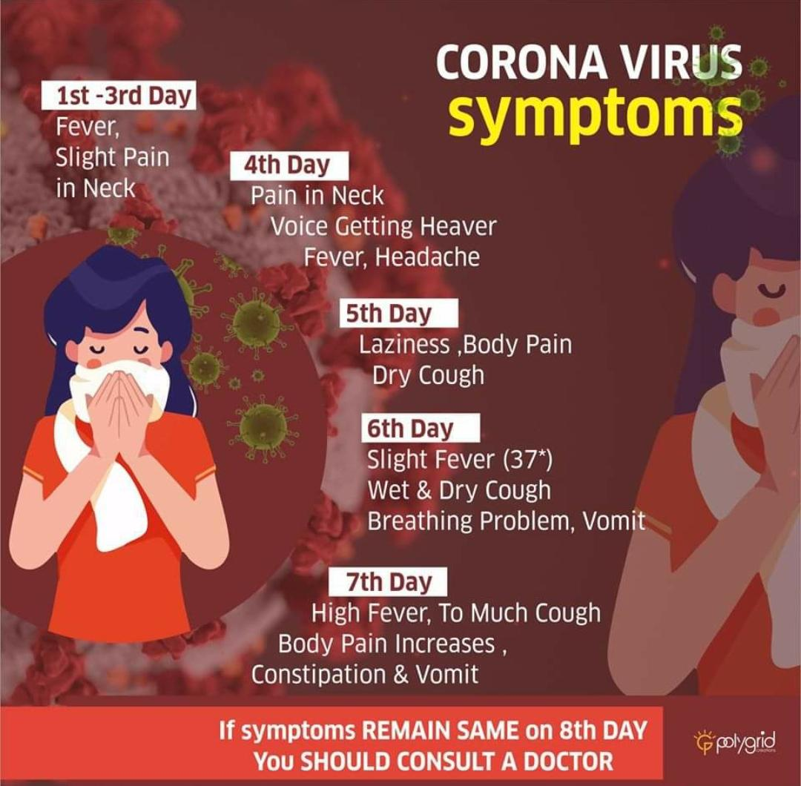

Coronavirus disease (COVID-19) is a new strain of coronaviruse that was discovered in 2019 and has not been previously identified in humans. Coronaviruses are zoonotic, meaning they are transmitted between animals and people.
As a normal person the disease can affect you only of you allow it to. 3 main organs Mouth , Eyes , Nose (MEN) are the passage through which we get affected. so make sure you never touch these organs with un cleaned hand. wash your hands properly and regularly.
The following thread is taken from an Italian citizen Jason Yanowitz.He writes,
As they put it:
"To the rest of the world, you have no idea what's coming."
How did this virus spread in Italy? Let's take a look at how this developed stage by stage and how the Italian people reacted.
STAGE 1. You know that coronavirus exists, and the first cases begin to appear in your country.
Well, nothing to worry about, it's just a bad flu!
STAGE 2. I'm safe, everybody is overreacting, what's the need to go out with masks and stock toilet paper?
I'm going to live my life as usual, there's no need to freak out.
There are some deaths but they're all old people so the media is just creating panic for views, how shameful.
People lead their life as usual.. I'm not going to stop going out and meeting my friends am I?
STAGE 3. Schools and universities are closed in these areas but bars, work places, restaurants and so on are still open. Everywhere you turn people advise to wash your hands and limit going out, large groups are forbidden, every 5 minutes on TV they remind you of these rules.
But it still hasn't settled in people's mind.
STAGE 4. Schools and universities are closed everywhere for at least a month.
It's a national health emergency.
Hospitals are at capacity, entire units are cleared to make space for coronavirus patients.
There aren't enough doctors and nurses.
They're calling retired ones and those in their last 2 years of university.
There's no shifts any more, just work as much as you can.
Of course doctors and nurses are getting infected, spreading it to their families. There's too many cases of pneumonia, too many people who need ICU and not enough places for everyone. That means that the elderly and trauma/stroke patients can't get treated because corona cases have priority.
People have died because there wasn't any more space.
I have a doctor friend who called me devastated because he had to let 3 people die that day.
Nurses crying because they see people dying and can't do anything aside from offering some oxygen.
STAGE 6.
People can go to work, do grocery shopping, go to the pharmacy, and all businesses are still open because otherwise the economy would collapse (it already is), but you can't move from your commune unless you have a valid reason
2 days later, it's announced that all (most) businesses are closed: Bars, restaurants, shopping centers, all kinds of shops etc.
Everything except supermarkets and pharmacies.
You can move around only if you have certification with you. The certification is an official document where you declare your name, where you're coming from, where you're going and what for. If you're a known positive patient you risk from 1 to 12 years of jail for homicide.
That's what the situation is like now today as of the March 12th.
Keep in mind that it all happened in around 2 weeks...5 DAYS FROM STAGE 3 TO TODAY.
Final thoughts.
If there are cases where you live, then the virus is spreading, and you're maybe 1-2 weeks behind us.
But you'll get to our point eventually.
PLEASE take any precaution you can take.
Don't act like it's not going to get you.
If you can, STAY HOME.
🌟👍